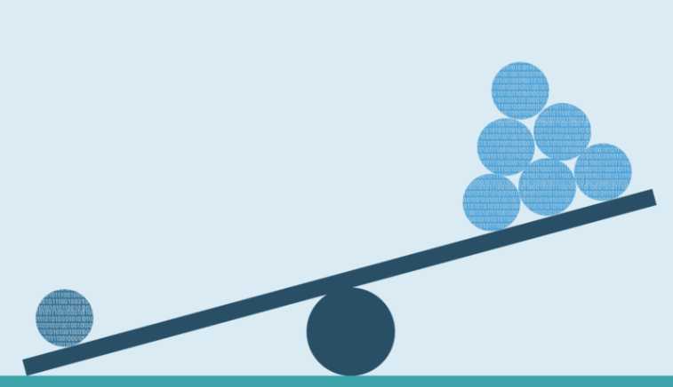

# Imports
from sklearn.datasets import load_breast_cancer
# Load data
X, y = load_breast_cancer(return_X_y=True)
Introduction
The library imbalanced-learn-extra is a Python package that extends imbalanced-learn. It implements algorithms that are not included in imbalanced-learn due to their novelty or lower citation number. The current version includes the following:
A general interface for clustering-based oversampling algorithms.
The Geometric SMOTE algorithm.
Clustering-based oversampling
Clustering-based oversampling algorithms deal with the within-classes imbalance issue, since SMOTE and its variants addresses only the between-classes imbalance. To present the API, let’s first load some data:
The data are imbalanced:
# Imports
from collections import Counter
# Classes distribution
counter = Counter(y)
print(
f"Number of majority class samples: {counter[1]}.",
f"Number of minority class samples: {counter[0]}.",
sep="\n",
)Number of majority class samples: 357.
Number of minority class samples: 212.I will use KMeans and SMOTE to create a clustering-based oversampler, but any other combination would work:
# Imports
from sklearn.datasets import load_breast_cancer
from imblearn.over_sampling import SMOTE
from sklearn.cluster import KMeans
from imblearn_extra.clover.over_sampling import ClusterOverSampler
# Create KMeans-SMOTE instance
rnd_seed = 14
smote = SMOTE(random_state=rnd_seed + 1)
kmeans = KMeans(n_clusters=10, random_state=rnd_seed + 3, n_init=50)
kmeans_smote = ClusterOverSampler(oversampler=smote, clusterer=kmeans)Now we can use the fit_resample method to get the resampled data:
_, y_res = kmeans_smote.fit_resample(X, y)
counter = Counter(y_res)
print(
f"Number of majority class samples: {counter[1]}.",
f"Number of minority class samples: {counter[0]}.",
sep="\n",
)Number of majority class samples: 357.
Number of minority class samples: 357.The clustering-based oversamplers can be used in machine learning pipelines:
# Imports
from sklearn.ensemble import RandomForestClassifier
from sklearn.model_selection import cross_val_score
from imblearn.pipeline import make_pipeline
# Cross validation score
classifier = RandomForestClassifier(random_state=rnd_seed)
classifier = make_pipeline(kmeans_smote, classifier)
score = cross_val_score(estimator=classifier, X=X, y=y, scoring="f1").mean()
print(f"The cross-validation F-score is {score}.")The cross-validation F-score is 0.9664262119887302.Geometric SMOTE
Geometric SMOTE is not just another member of the SMOTE’s family since it expands the data generation area and does not just use linear interpolation of existing samples to generate for new samples. To test its performance, let’s first simulate various imbalanced datasets:
# Imports
from sklearn.datasets import make_classification
from sklearn.model_selection import ParameterGrid
# Set random seed
rnd_seed = 43
# Generate imbalanced datasets
datasets = []
datasets_params = ParameterGrid(
{"weights": [[0.8, 0.2], [0.9, 0.1]], "class_sep": [0.01, 0.1]}
)
for data_params in datasets_params:
datasets.append(
make_classification(
random_state=rnd_seed,
n_informative=10,
n_samples=2000,
n_classes=2,
**data_params,
)
)We will also create pipelines of various oversamplers, classifiers and their hyperparameters:
# Imports
import pandas as pd
from sklearn.linear_model import LogisticRegression
from sklearn.neighbors import KNeighborsClassifier, NearestNeighbors
from sklearn.model_selection import cross_val_score, StratifiedKFold, GridSearchCV
from imblearn.pipeline import make_pipeline
from imblearn.over_sampling import RandomOverSampler, SMOTE
from imblearn_extra.gsmote import GeometricSMOTE
# Pipelines
classifiers = [LogisticRegression(), KNeighborsClassifier()]
oversamplers = [None, RandomOverSampler(), SMOTE(), GeometricSMOTE()]
pipelines = []
oversamplers_param_grids = {
"SMOTE": {
"smote__k_neighbors": [
NearestNeighbors(n_neighbors=2),
NearestNeighbors(n_neighbors=3),
]
},
"GeometricSMOTE": {
"geometricsmote__k_neighbors": [2, 3],
"geometricsmote__deformation_factor": [0.0, 0.25, 0.5, 0.75, 1.0],
},
}
cv = StratifiedKFold(n_splits=2, shuffle=True, random_state=rnd_seed + 5)
for classifier in classifiers:
for oversampler in oversamplers:
oversampler_name = (
oversampler.__class__.__name__ if oversampler is not None else None
)
param_grid = oversamplers_param_grids.get(oversampler_name, {})
estimator = (
make_pipeline(oversampler, classifier)
if oversampler is not None
else make_pipeline(classifier)
)
pipelines.append(GridSearchCV(estimator, param_grid, cv=cv, scoring="f1"))Finally, we will calculate the nested cross-validation scores of the above pipelines using F-score as evaluation metric:
n_runs = 3
cv_scores = []
for run_id in range(n_runs):
for dataset_id, (X, y) in enumerate(datasets):
for pipeline_id, pipeline in enumerate(pipelines):
for param in pipeline.get_params():
if param.endswith("__n_jobs") and param != "estimator__smote__n_jobs":
pipeline.set_params(**{param: -1})
if param.endswith("__random_state"):
pipeline.set_params(
**{
param: rnd_seed
* (run_id + 1)
* (dataset_id + 1)
* (pipeline_id + 1)
}
)
cv = StratifiedKFold(n_splits=3, shuffle=True, random_state=10 * run_id)
scores = cross_val_score(
estimator=pipeline,
X=X,
y=y,
scoring="f1",
cv=cv,
)
print(f"Run: {run_id} | Dataset: {dataset_id} | Pipeline: {pipeline_id}")
pipeline_name = '-'.join(
[
estimator.__class__.__name__
for _, estimator in pipeline.get_params()['estimator'].get_params()[
'steps'
]
]
)
cv_scores.append((run_id, dataset_id, pipeline_name, scores.mean()))Let’s see the final results of the experiment:
cv_scores = (
pd.DataFrame(cv_scores, columns=["Run", "Dataset", "Pipeline", "Score"])
.groupby(["Dataset", "Pipeline"])["Score"]
.mean()
.reset_index()
)
cv_scores| Dataset | Pipeline | Score | |
|---|---|---|---|
| 0 | 0 | GeometricSMOTE-KNeighborsClassifier | 0.617232 |
| 1 | 0 | GeometricSMOTE-LogisticRegression | 0.281625 |
| 2 | 0 | KNeighborsClassifier | 0.515543 |
| 3 | 0 | LogisticRegression | 0.001622 |
| 4 | 0 | RandomOverSampler-KNeighborsClassifier | 0.586250 |
| 5 | 0 | RandomOverSampler-LogisticRegression | 0.282728 |
| 6 | 0 | SMOTE-KNeighborsClassifier | 0.579605 |
| 7 | 0 | SMOTE-LogisticRegression | 0.281004 |
| 8 | 1 | GeometricSMOTE-KNeighborsClassifier | 0.487351 |
| 9 | 1 | GeometricSMOTE-LogisticRegression | 0.186105 |
| 10 | 1 | KNeighborsClassifier | 0.316577 |
| 11 | 1 | LogisticRegression | 0.003130 |
| 12 | 1 | RandomOverSampler-KNeighborsClassifier | 0.460189 |
| 13 | 1 | RandomOverSampler-LogisticRegression | 0.188722 |
| 14 | 1 | SMOTE-KNeighborsClassifier | 0.428110 |
| 15 | 1 | SMOTE-LogisticRegression | 0.189665 |
| 16 | 2 | GeometricSMOTE-KNeighborsClassifier | 0.619463 |
| 17 | 2 | GeometricSMOTE-LogisticRegression | 0.296189 |
| 18 | 2 | KNeighborsClassifier | 0.522802 |
| 19 | 2 | LogisticRegression | 0.006476 |
| 20 | 2 | RandomOverSampler-KNeighborsClassifier | 0.592432 |
| 21 | 2 | RandomOverSampler-LogisticRegression | 0.290737 |
| 22 | 2 | SMOTE-KNeighborsClassifier | 0.580532 |
| 23 | 2 | SMOTE-LogisticRegression | 0.294199 |
| 24 | 3 | GeometricSMOTE-KNeighborsClassifier | 0.460700 |
| 25 | 3 | GeometricSMOTE-LogisticRegression | 0.191214 |
| 26 | 3 | KNeighborsClassifier | 0.323485 |
| 27 | 3 | LogisticRegression | 0.006260 |
| 28 | 3 | RandomOverSampler-KNeighborsClassifier | 0.454507 |
| 29 | 3 | RandomOverSampler-LogisticRegression | 0.195133 |
| 30 | 3 | SMOTE-KNeighborsClassifier | 0.428896 |
| 31 | 3 | SMOTE-LogisticRegression | 0.192810 |
The next table shows the pipeline with the highest F-score per dataset:
cv_scores_best = cv_scores.loc[cv_scores.groupby("Dataset")["Score"].idxmax()]
cv_scores_best| Dataset | Pipeline | Score | |
|---|---|---|---|
| 0 | 0 | GeometricSMOTE-KNeighborsClassifier | 0.617232 |
| 8 | 1 | GeometricSMOTE-KNeighborsClassifier | 0.487351 |
| 16 | 2 | GeometricSMOTE-KNeighborsClassifier | 0.619463 |
| 24 | 3 | GeometricSMOTE-KNeighborsClassifier | 0.460700 |
Therefore, Geometric SMOTE outperforms the other methods in all datasets when the F-score is used as an evaluation metric.